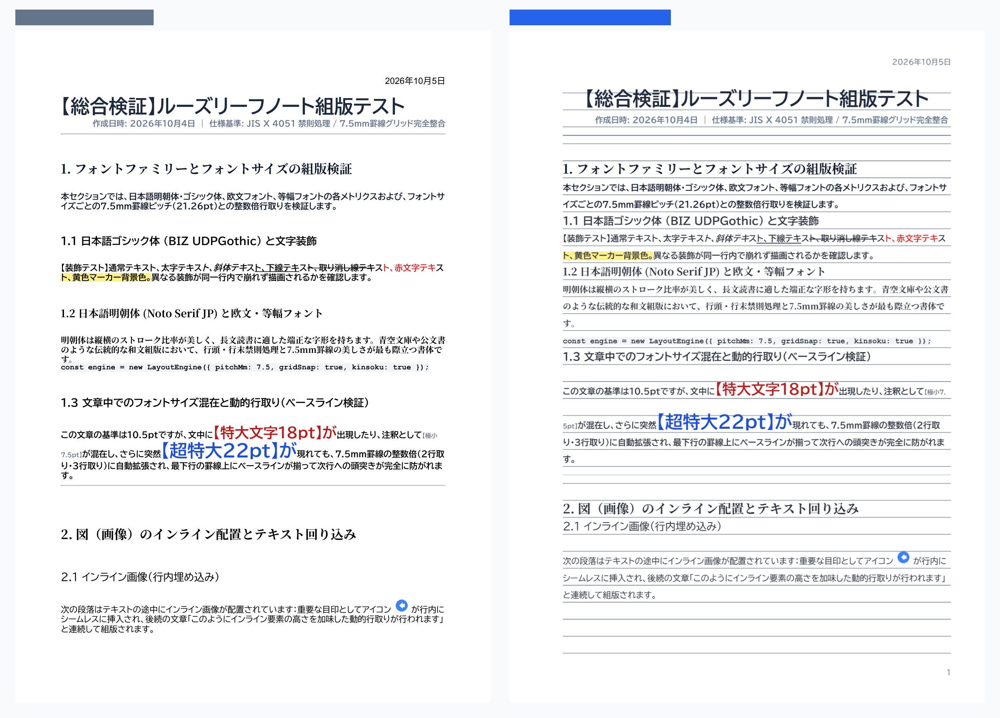

ノート罫線と文字を1mmの狂いもなく正確に一致。B5・A4ルーズリーフに完全同期した美しい印刷用PDFを1クリックで生成します。 Aligns text and ruling lines with millimeter precision. Generates clean, print-ready PDFs perfectly synchronized with standard B5/A4 loose-leaf paper in one click. 文字与笔记本横线毫米级精准对齐。一键生成完美适配 B5 / A4 活页纸的高清晰度打印版 PDF。 노트 줄눈과 글자를 1mm 오차도 없이 정확하게 일치. B5/A4 루즈리프에 완벽 동기화된 인쇄용 PDF를 한 번의 클릭으로 생성합니다.
（左：Google ドキュメント™ 出力 / 右：Line-aligned 組版出力）※画像をクリックすると拡大表示できます (Left: Standard Google Docs™ output / Right: Line-aligned typeset output) *Click image to zoom （左：Google 文档™ 原版输出 / 右：Line-aligned 优化排版输出）※点击图片可放大查看 (왼쪽: Google 문서™ 출력 / 오른쪽: Line-aligned 조판 출력) ※이미지를 클릭하면 확대됩니다

行間や文字高さを自動再計算し、市販のルーズリーフ（A罫・B罫など）の横罫線に文字ベースラインをミリ単位で整列させます。 Automatically recalculates line spacing and font metrics to snap text baselines perfectly onto notebook lines (Rule A/B). 自动重新计算行间距与字体尺寸，使文字基准线精确贴合市售活页纸横线。 줄 간격과 글자 높이를 자동 재계산하여, 시판 루즈리프 가로 줄눈에 글자 기준선을 밀리미터 단위로 정렬합니다.
挿入された表や画像を罫線グリッドの高さ単位に自動スナップ。全体の段落リズムを崩すことなく美しく収めます。 Snaps tables and figures into notebook grid heights, preserving overall paragraph rhythm and aesthetics. 将表格与图片自动对齐到横线网格高度单位，不破坏整体排版节奏与阅读美感。 삽입된 표와 이미지를 줄눈 격자 높이에 자동 맞춤하여 전체 조판 리듬을 유지합니다.
文字の追記やメモが書き込みやすい十分な行間とマージンを確保。暗記シートや問題演習の印刷に最適です。 Provides ample margins and spacing tailored for handwriting, making it ideal for self-study and exercise sheets. 保留充足的行间空白与页边距，方便手写注释与做题记录，打造最强复习手写笔记本。 필기 추가나 메모를 적기 편한 여백과 줄 간격을 확보하여, 복습 및 문제 풀이 인쇄에 최적화되어 있습니다.
画面表示用フォントに依存せず、印刷に最適な標準フォントで高品質なベクターPDFを直接ダウンロードできます。 Outputs high-resolution vector PDFs using standard fonts optimized for sharp paper printing. 无需依赖本地特殊字体，直接导出适合实体打印的高清晰度矢量 PDF 文件。 화면용 폰트에 구애받지 않고, 인쇄에 가장 적합한 표준 폰트로 선명한 벡터 PDF를 다운로드할 수 있습니다.
本ツールは「手書きしやすい学習ノートへの最適化」を目的として再組版を行うため、以下の仕様・制限事項がございます。
As this tool reformats documents specifically to optimize them as handwritten study notebooks, the following specifications and limitations apply:
为了将文档重排为适合手写记笔记的“学习笔记本”，本工具具有以下规格和限制说明：
본 툴은 '손글씨 쓰기 편한 학습 노트 최적화'를 목적으로 재조판을 진행하므로, 다음과 같은 사양 및 제한 사항이 있습니다.
Line-aligned の進化と組版エンジンの更新記録（日付順） Evolution of Line-aligned and precision typesetting engine (Chronological) Line-aligned 演进与精密排版引擎更新历程（按时间顺序） Line-aligned의 발전 및 정밀 조판 엔진 업데이트 기록 (날짜순)